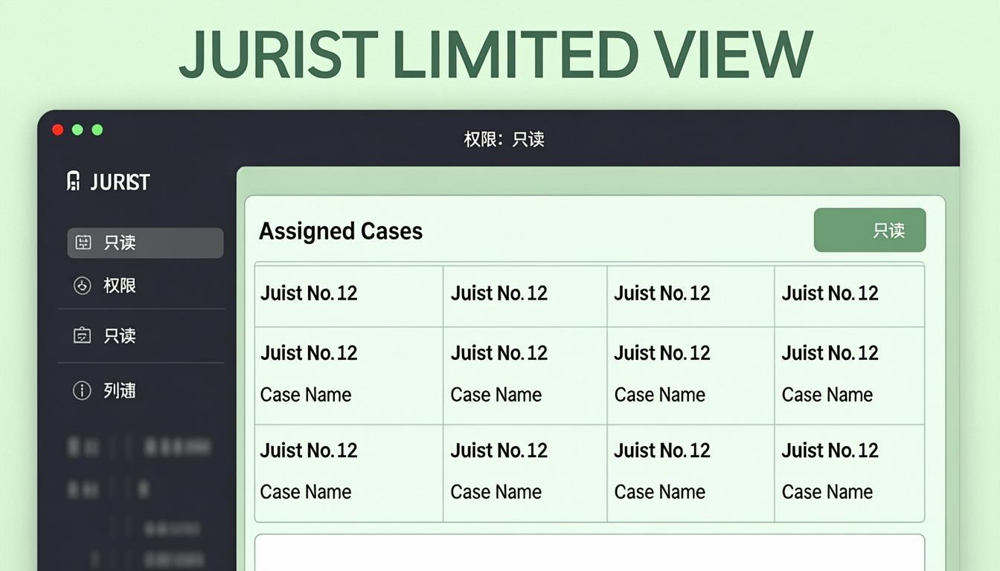

Chapitre 1
Introduction
Bienvenue dans le manuel d'utilisation de JurisLink pour le profil Juriste. En tant que juriste, vous disposez d'un accès limité orienté vers les aspects documentaires et opérationnels de l'activité du cabinet. Votre rôle est centré sur la consultation des dossiers, la gestion des documents, le suivi des tâches qui vous sont assignées et la saisie des temps passés.
Résumé de vos capacités :
✓DossiersConsultation et modification uniquement. Pas de création de dossier.
✓ClientsConsultation et export uniquement.
✓DocumentsConsultation, création, modification et export. Accès étendu sur les documents.
✓TâchesConsultation et modification uniquement. Pas de création de tâche.
✓Temps passésConsultation et modification (saisie de vos temps).
Restrictions importantes
Vous n'avez pas accès à : la facturation, les événements de l'agenda, la messagerie (sauf consultation), les rapports (sauf consultation/export), les paiements, les utilisateurs, les paramètres, l'audit, les communications et les notifications (sauf consultation). Vous ne pouvez ni créer de dossiers ni créer de tâches.
Chapitre 2
Premiers pas
Connexion à l'application
1Accéder à l'écran de connexionLancez JurisLink depuis votre navigateur. L'écran de connexion s'affiche avec les champs Identifiant et Mot de passe.
2Saisir vos identifiantsEntrez votre identifiant professionnel et votre mot de passe fournis par l'administrateur du cabinet.
3Valider la connexionCliquez sur « Se connecter ». Vous accédez au tableau de bord Juriste, orienté vers vos tâches et dossiers assignés.
Présentation du tableau de bord
Le tableau de bord Juriste affiche vos tâches en cours, les dossiers auxquels vous êtes assigné, vos temps passés récents et les documents récemment modifiés. L'interface est simplifiée par rapport aux profils supérieurs, centrée sur votre travail quotidien.

Figure 1 — Tableau de bord du Juriste
Navigation dans le menu latéral
Le menu latéral affiche uniquement les sections accessibles : Dossiers, Documents, Tâches et Temps passés. Les autres sections ne sont pas visibles dans votre interface.